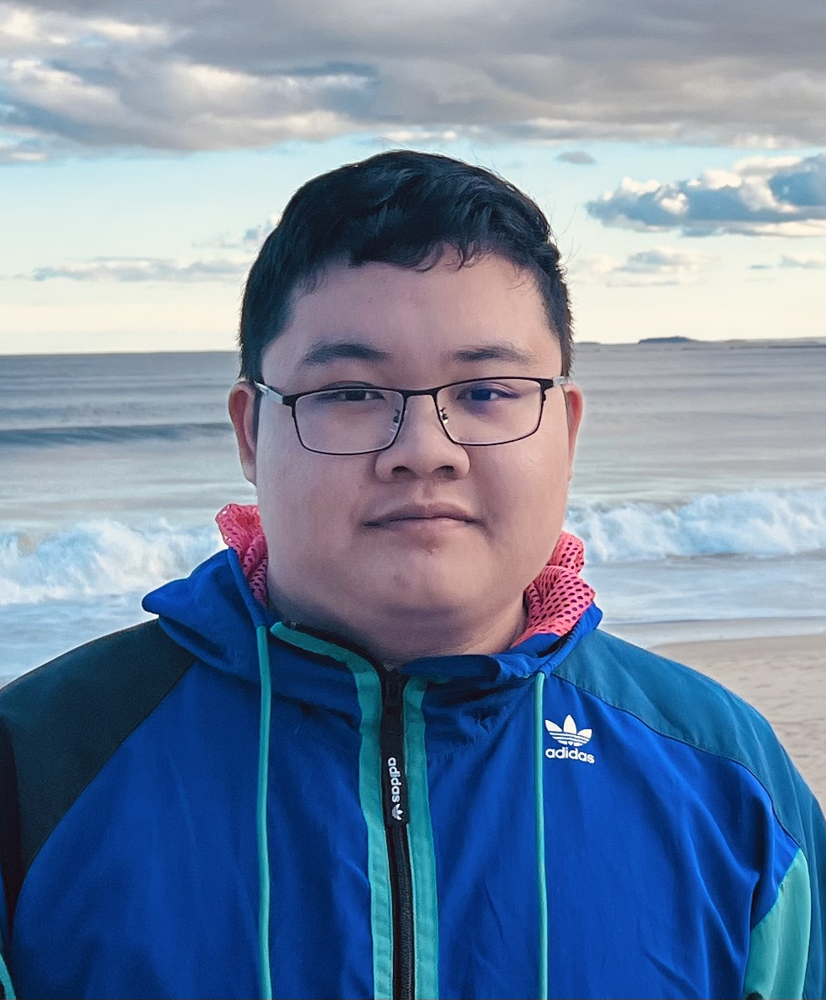

|  |
Peidi SongPh.D. StudentSchool of Computer Science Georgia Institute of Technology Lab Location: Klaus 3337 Email: psong45 [-at-] gatech [-dot-] edu |
I am currently a first-year Ph.D. student in CS at Georgia Tech co-advised by Prof. Ahmed Saeed and Prof. Alexandros Daglis. I completed my M.S. in ECE at Georgia Tech. Before joining Georgia Tech, I completed my B.S. in CS at Peking University advised by Prof. Yun Liang.
My research interests lie in computer architecture, networking, and hardware-software codesign. I am currently looking at research topics on microservices. In my M.S., I worked on project about circuit physical design for printed nanomodular electronics. In my B.S., I worked on project about kernel code optimization for tensor operators.